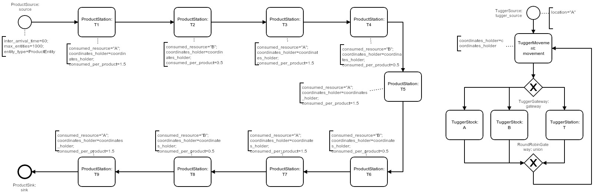

Digital Twin for Assembly Line Supply Strategy Planning
A Case-Study on Reinforcement-Learning in Logistics

Artificial Intelligence, Digital Twins, Industry 4.0… you might have heard these buzzwords before.
But wouldn’t it be cool to apply them, solving an actual problem?
To learn about practical application rather than abstract concepts?
To know which challenges to master, and which pitfalls to avoid?
Great, so this article is for you!
It will..
- describe how to use reinforcement learning to solve a production-logistics problem
- explain basic concepts of reinforcement learning and industrial digital twins
- present an in-depth case-study on assembly line supply strategy planning
And it will include code, ready for execution on your machine. Docker-based, no further installation needed.
Get the repo: https://github.com/fladdimir/tugger-routing
Disclaimer:
This article is the result of leisure-time work. It represents our individual perspectives on the discussed topics. It’s a report capturing our personal experiences, rather than a purely scientific study. The content, concepts, and their implementation can probably be improved in virtually any imaginable way.
We still hope that you enjoy reading.
Outline
Introduction & Basics
Reinforcement learning represents an emerging technique from machine learning. It can autonomously derive complex action sequences in dynamic environments and is successfully applied in various fields, e.g. from robotics and gaming. Instead of explicitly defining a specific solution strategy for a problem, we can just provide an environment. A self-learning agent will then autonomously discover successful strategies just by interaction.
Needless to say, there is nothing new under the moon and previous studies show the general feasibility of using RL for solving production-logistics problems.
So why do we think that there is the need for yet another article about this very topic?
First, there is a lot of active development in RL, as well as in the application of Digital Twins in production/logistics. We believe that there lies even more potential in integrating these concepts. Furthermore, we found the often derogatory-treated “low-level implementation work” to be an actual obstacle for making progress in this challenging and highly inter-disciplinary area of applied research. This contribution strives to show a working example based on a tool-stack which seamlessly integrates two of the most popular open-source software packages from their respective areas: stable-baselines for RL and SimPy for implementing Digital Twins.
Reinforcement Learning
If you still ask yourself what RL is capable of, we definitely recommend to have a look at what the guys from openai are doing.
Admittedly, thats probably a quite sophisticated and highly engineered example, but it breaks down to a simple interaction between an agent and an environment. Technically, this interaction is defined by an interface (or abstract base-class as Python likes to put it), which is part of the gym-package.
The graphic below illustrates the exchange of information between agent and environment. First, the agent calls the environment’s step method, providing the action to be executed. The environment then processes the action and returns:
- the new state of the system (observation),
- the reward which occured during the step (might be zero),
- a done value potentially indicating the end of an episode (and the need for a subsequent reset)
- and an info-object (might contain additional information e.g. for logging purposes).
The interface also prescribes more, such as the formats of action-space and observation_space, as well as render and reset behavior.
The various RL algorithms provided by the
stable-baselines-package are ready to work with environments implementing this gym-interface.
All that is left to do is creating a compliant environment - and in the next section we will show how this can be achieved in the domain of logistics.
Digital Twins and Discrete Event Simulation
Frankly, Digital Twin is probably the most overused buzzword of all the “Lostistics 4.0 / Industry 4.0” stuff that is out there. Even though we could not resist to put it into the title, from now on we’ll prove that we can do better and use the more specific term “Discrete Event Simulation” (DES).
Why DES? Discrete Event Simulation is one of the widespread tools for analysis and design of logistics systems. Today’s applications go beyond the traditional usage for systems planning. They include more operational use-cases such as virtual commissioning or short-term forecasts. Simulation models are getting integrated tightly into other IT-systems. This allows to increase process transparency and to improve our means to analyze, control, and optimize system performance in real-time. Doesn’t this sound pretty close to what Digital Twins always promise?
Most industrial simulation uses are still based on commercial packages.
However, there are a couple of open-source alternatives, which are typically closer to general-purpose language programming. Even though they tend to lack some convenient commercial features, there are upsides such as better scalability and simplified interfacing.
Related to Python we became aware of two popular DES packages: Salabim and SimPy. Both are not only free and open-source, but even built on top of the standard library of one of the world’s most popular programming languages - let’s see what we can get out of that!
Casymda-Package
Based on SimPy, we added bits of complementing functionality to gain some of the modeling convenience of commercial “block-based” DES-packages.
Casymda facilitates the usage of bpmn-process-descriptions to generate corresponding simulation-model python-code.
.bpmn-files (basically xml) can easily be created with the
Camunda-Modeler.
This graphical modeling helps to maintain an overview of the high-level model-structure.
Generated Casymda-models also include a generic, token-like animation of simulated processes out-of-the-box, ready to be run in a web-browser.
For presentation and debugging, animations can be paused and their speed can be changed dynamically.
Solely animation-related events are not scheduled if the simulation is run without visualization.
This maximizes the execution speed - which becomes especially important related to RL, when a high number of runs is necessary.
Further features of Casymda include simulated movements along shortest paths in a 2D-tilemap-space, and gradual typing for development convenience (checkout
pyright if you are using
vscode).
For more info on Casymda have a look at the repo or the (German) website.
Wrapping a DES-Model in a Gym-Environment
To be able to train an RL-agent inside a simulation model, we need to make the model implementing the Gym-interface described above.
The following diagram illustrates the coupling concept:

When the step function of the Gym-Environment is called (1), the provided action is propagated to the relevant block of the simulation model (1.1).
This is realized with help of an ActionHolder, so that a consuming piece of decision logic can dispatch according to the received information.
Subsequently, the simulation is executed until a next_action_needed-Event is triggered by the simulation model (1.2).
This is indicating the end of the current step and the need for another action of the agent.
One Gym-step can thus comprise an arbitrary number of discrete SimPy-steps, each of which can in turn take an arbitrary amount of simulated time.
Rewards are managed with help of a RewardHolder object, which is wired into the relevant blocks of the simulation model during environment initialization.
At the end of each step, occured rewards are collected (1.3). Depending on the type of the optimization problem to solve, a post-processing of collected rewards can be applied (e.g. taking into account the amount elapsed time, so that an agent can learn time-efficient behavior).
To check whether an episode ended (the done part of the returned information), the current state of the model is checked against configured done_criteria (1.4).
These can contain e.g. some goals to be reached or a certain amount of time to be simulated.
To provide the agent with an observation, a model-specific ModelStateToObservationConverter is used to collect relevant information from the model.
The created observation conforms to the defined observation_space (1.5).
This step could include e.g. counting the number of entities in different queues or checking inventory levels and creating a NumPy-array out of this information.
Finally, collected information is returned to the agent (2), which can learn based on the reward and decide for the next action.
Having the basics covered, let’s see how we get this to work.
Case-Study
Back in August of last year at the MIM2019 in Berlin, we had the chance to attend an interesting talk of two Bavarian guys presenting their research on improving the tour-building for in-plant milk-run systems. These internal deliveries are commonly used for assembly line supply, and the tours are typically following a very rigid plan. Given the fact that the actual demand at the line tends to vary, their research revealed quite a lot of potential to decrease delivery lead times and to increase systems’ utilization - just by making the tour-planning more dynamic.
Based on this setting we constructed an abstracted and simplified version of an assembly line with a corresponding material supply system to provide a playground for reinforcement learning algorithms.
Scenario
The image below shows a schematic layout plan of the system:

Unfinished products enter the system on the upper right (I) and are assembled sequentially at 9 different stations, arranged in U-shape (I-IX).
Finished products leave the system after the last assembly step (IX).
Stations require a certain amount of resource of either type A or B to be present in the station’s inventory before an assembly step can start.
Each station can only hold one product at a time, and finished products can only be forwarded once the following station is empty (thus multiple upstream stations holding already finished products may be blocked by downstream stations which are still processing a product or waiting for material before being able to start processing).
Material is supplied by a tugger, able to carry a limited discrete amount (“boxes”). The tugger can load material at a stock (A and/or B, located at the bottom).
1 discrete unit of material (“box”) can be loaded/unloaded at a time.
The goal of the assembly line is achieving the maximal throughput, which also correlates with small lead-times of products.
Assumptions:
- material can only be loaded at the stocks (
AandB), each of which holds an infinite amount of material, so that the tugger never waits for material at a loading site - material can only be unloaded at a station actually requiring this type of material (hence a tugger cannot unload a box of
Aat a station which needsBfor assembly) - the inventory capacity at the stations (
I-IX) is infinite, so that the tugger never waits at an unloading site (otherwise livelocks could occur where a tugger cannot unload material wherever it moves)
| System parameters | |
|---|---|
| Takt-time: processing time per station per product | 60s |
Demand per product of stations type A |
1.5 units |
Demand per product of stations type B |
0.5 units |
| Tugger movement speed | 10 m/s |
| Tugger capacity | 25 units |
| Amount of material (un-)loaded per step | 5 units |
| Time needed per (un-)loading step | 5s |
Distances between stocks and stations (higher demands cause more frequent tours):
| Relation | Simple | Demand-weighted |
|---|---|---|
| A -> T1 | 1096.40m | 1644.60m |
| B -> T2 | 926.40m | 463.20m |
| A -> T3 | 736.40m | 1104.60m |
| B -> T4 | 566.40m | 283.20m |
| A -> T5 | 234.10m | 351.15m |
| B -> T6 | 556.40m | 278.20m |
| A -> T7 | 726.40m | 1089.60m |
| B -> T8 | 916.40m | 458.20m |
| A -> T9 | 1086.40m | 1629.60m |
The table below shows a simple throughput estimation by calculating the average cycle time of the tugger and the expected station utilization.
The estimation assumes “full truck loads”, always completely loading at one stock (either A or B), and fully unloading at a station (T1 - T9).
| Throughput estimation | |
|---|---|
| Max throughput 24h | 60/h x 24h = 1440 |
| Demand / product | 9.5 units |
| Demand / time | 9.5 / 60s = 0.16/s |
| Average weighted distance | 811.37m |
| Average driving time | 81.137s |
| (Un-)loading time 25 units | 25s |
| Average cycle time | (81.137s + 25s) x 2 = 212.274s |
| Delivered units / cycle | 25 |
| Delivered units / time | 0.12/s |
| Average utilization | 0.12/s / 0.16/s = 75% |
| Expected throughput per min | 75% x 60/min = 45/min |
| Expected throughput per 24h | ~1080/24h |
As we can see, the delivery performance of the tugger represents the limiting factor (bottleneck) of the system, which means that each improvement made here will be directly reflected by a corresponding increase in the overall throughput.
For the sake of simplicity, no stochastic model behaviour (such as e.g. randomly distributed loading or movement times) is assumed, hence the simulation model will be deterministic.
As stated: the system as a whole is quite abstracted and simplified - but still capturing at least some of the basic complexity inherent to real-world problems.
Will our RL-agent be able to…
- grasp the underlying mechanics?
- distinguish different product types?
- discover the spots of demand and supply?
- deal with the limits of the tugger’s capacity?
- reach the maximal possible throughput?
We’ll find out, but let’s first have a look at what the learning environment will look like.
Simulation Model
The simulation model of the system basically consists of 2 processes, both depicted in the graphic below.

On the left side, products pass through the 9 assembly steps (ProductStation, rotated U-shape) before leaving the system, occasionally being blocked by downstream stations or waiting for material at a station.
On the right side the tugger passes through an infinite cycle of movement and loading/unloading process steps (after initial creation at location A by a TuggerSource):
- the next movement target is chosen and the movement is completed (no actual movement if the next target equals the current location) (
TuggerMovement). - Depending on the current location (being either a stock
A/B) or aProductStation, the next tugger process step is chosen:TuggerStock Aloading of one unit ofA(if tugger-capacity not reached)TuggerStock Bloading of one unit ofB(if tugger-capacity not reached)TuggerStationunloading of one unit ofAorBif possible (material required by station is loaded)
Note that even unsuccessful loading or unloading attempts are implemented to take a small, fixed amount of time, so that every possible Gym-step is guaranteed to take at least some simulated time (and a time-constrained episode is guaranteed to reach its end eventually).
Below you can see a process animation, as well as an animation of a tilemap. The agent here follows an explicitly defined simple rule of always delivering a complete load of 25 units to the station with the lowest inventory level. To run the animation just clone the repo, run the command, and visit http://localhost:5000.
Process animation:
docker-compose up web-animation-lia-process

Tilemap animation:
docker-compose up web-animation-lia

Preparing the Gym-Environment
The TuggerEnv implements the Gym-Env interface and wraps the simulation model to be used for RL-agent training.
Generic functionalities like the mandatory step and reset functions and related helper methods are inherited and abstract/default parent-methods are overridden in a model-specific way as required (Template-Method Pattern):
initialize_action_and_reward_holderspecifies which model blocks…- need access to gym-actions:
TilemapMovement, choosing the next movement target based on the supplied target index number - log achieved rewards:
ProductSink, simply counting a reward of 1 for each finished product
- need access to gym-actions:
get_rewardspecifies how the elapsed time is taken into account for reward calculationcheck_if_model_is_doneimplements a model-specific check whether a certain amount of time has been simulated. One episode is scheduled to take 24h (86400s).
The render method of the Gym-Env is not implemented, since animations at arbitrary moments in time - whenever a Gym-step is finished - do not make much sense for discrete event simulation environments. The animation is controlled separately.
The info return value of step is configured to return the number of finished_products which can then be logged.
Observation- & Action-Space
The model-specific extraction of the observation from the current model state is done by an instance of a TuggerEnvModelStateConverter which implements the ModelStateConverter “interface”.
Specifically, the observation consists of the following information which describes the current state of the system (overall 48 values):
ProductStationobservations (5 values x 9 stations = 45 values):- current inventory-level (normalized 0-1, counted up to a limit of 10 units)
- busy-state (binary)
- waiting_for_material-state (binary)
- empty-state (binary, whether a product is present or not)
- blocked-by-successor-state (binary)
TuggerEntityobservations (3 values x 1 tugger = 3 values):- loaded amount of
A(relative to capacity) - loaded amount of
B(relative to capacity) - current location (index)
- loaded amount of
Note that parts of a station observation can be seen to be redundant (e.g. a station which is neither busy nor waiting nor empty can only be blocked) - behind lies the rationale that an intelligent algorithm will (hopefully) learn an importance of different components of an observation, so that we do not have to worry about more than providing all potentially useful information.
The action_space (of type gym.spaces.Discrete) consists of the 11 possible movement targets (9 stations + 2 stocks, encoded by index).
Rewards
As stated above, the defined goal of the assembly line is to achieve the best possible throughput of products, which corresponds to producing as many products as possible e.g. during one episode (24h).
How do we achieve that? Which kind of incentive is suitable to stimulate such a behavior? The design of appropriate reward functions is known to be a non-trivial matter. In fact, the design of rewards and incentives even for (arguably more intelligent) humans is a major problem in management and education (remember the last time you studied for passing an exam instead of actually learning useful contents).
For the environment at hand, we could just think about giving a single reward at the end of each episode, proportionally to the number of achieved products in that fixed amount of time (24h), which would probably properly reflect our aim of maximizing the throughput. However, the resulting reward would be quite sparse and therefore greatly decelerate learning speed (taking the average duration of a random action, each episode would take more than 1000 actions to complete before an agent sees any reward).
Another idea would be to reward every successful delivery of material to any station, which would be possible to be completed within 2 steps (movement to the stock & movement to a suitable station consuming the loaded material). This way we would get less sparse rewards, but also an obvious problem of exploitability, caused by the fact that the delivery of material to one station alone would actually never lead to the completion of any product at all.
As a compromise, we simply decided to go for a reward of 1 everytime a product completes its final assembly step, which is possible be completed within 12 steps (minimum, not necessarily an optimal strategy). Even exhibiting a random behavior, this would allow an agent to generate a reward of around 50 during one episode, so that there are sufficient “randomly succesful” samples to learn from.
One problem with this reward comes from the fact that the simulated time needed to obtain a reward is not reflected by the reward itself. Since every gym-step can actually eat up a greatly varying amount of simulation time (from 5 seconds to >100), there is a huge implicit impact on the throughput, which the agent is unaware of. To solve this problem we introduced “costs of time”, which means we simply give a small negative reward every step, proportional to the amount of simulated time that passed. This finally leaves us with the subsequent question of how big these “costs” should be. If set too high, they would just overrule any of the few actual rewards at the beginning of the training. If put too low, there would not be sufficient stimulus to exhibit time-efficient behavior at all. Again, as a simple compromise, we implemented the costs to grow proportionally with the highest reward seen so far at the end of an episode, which guarantees a certain balance, and rewards increasing time-efficiency.
The above described reward that we designed is definitely not “perfect” and also feels a bit like putting too much effort into “reward engineering” - nevertheless its a first solution our agents can hopefully work with…
RL-Agent Training & Evaluation
The environment presented above is characterized by a Discrete action space and a continuous (Box) observations space.
The stable-baselines documentation lists available RL algorithms and their compatibility.
Due to the type of action space, some algorithms are not feasible (i.e. DDPG, SAC, and TD3).
To train a stable-baselines RL algorithm, the TuggerEnv is vectorized, using a DummyVecEnv and a standard MlpPolicy.
To leverage multiple CPUs for training, it can be desirable to use a SubprocVecEnv (but for simpler logging & analysis we did not go with that one here, instead we did multiple independent training runs in parallel).
Train an ACER-agent (by default for 10,000 steps only, which should take <1min):
docker-compose up acer-training
Plot performance (might require additional setup for connecting the display):
docker-compose up acer-plot-training
Tilemap-animation of the trained agent (http://localhost:5000):
docker-compose up acer-web-animation-tilemap
Below we can see an ACER-agent trained for 1m steps:

As we can see, the agent manages to fully load the 25 units onto the tugger most of the time, seems to target correct (A/B) stations for material unloading, and the choice of stations with a currently low inventory level seems reasonable too!
But how does the overall performance look like?
Performance Comparison
For comparison we trained four algorithms (ACER, ACKTR, DQN, and PPO2) with standard settings for both 1 and 3 mio. (Gym-)steps.
Training took up to 2.5 hours (DQN, 3mio. steps) on a 2.9GHz Intel i9, using a single-process DummyVecEnv as explained above.
The following graph shows the number of produced products per episode (24h) over the course of the training run for each algorithm, as well as the performance of the deterministic lowest-inventory heuristics (yellow line; always delivering a complete load of 25 units to the station with the currently lowest inventory), and the average performance of fully random actions (turquoise line, measured over 100 episodes).

- As we can see, all of the algorithms manage to increase the number of produced products per episode significantly above the level reached by random actions (turquoise line at the bottom), indicating successful learning progress.
- Furthermore, none of the trained algorithms reaches the performance of the lowest-inventory-heuristics (yellow line at the top).
- The lowest-inventory-heuristics performance reaches the estimated maximum possible throughput of the system (estimated to appr. 1080/episode). This strategy can therefore be considered to be close to a global optimum.
- During training, a complete breakdown in performance can occur. Most prominently: ACER_3mio. (blue line, episode 260, no recovery at all). Other algorithms show drops in performance as well but seem to recover better (e.g. ACKTR - green, PPO2 - pink).
- The best-performing RL algorithm (ACER trained for 1mio. steps, orange line) reached a maximum throughput of 856 products / episode (78% of the near-optimal heuristics performance).
The number of episodes varies due to the variable number of Gym-steps per episode (24h of simulated time), depending on the simulated time each Gym-step needs. The small number of episodes of the ACER_3mio. training is explained by the up to 17277 Gym-steps per episode, occurring from episode 260 on. Each step of such an episode takes only 5 seconds (the minimum possible time of all available Gym-steps, “achieved” by a repeated visit of the same location). This behavior might be caused by the defined negative reward per step, proportional to the amount of simulated time the step needed. Appearently, the agent does not remember how to generate a positive reward and only tries to maximize the short-term reward by minimizing the step-time. Obviously this behavior does not lead to any successful delivery, let alone completion of any product.
It is worth to be mentioned that all training runs were done with default algorithm settings, and that the evaluation of different hyperparameters is strongly recommended for performance optimization. Thus, it might not be improbable for an RL agent to close the performance gap towards the theoretically reachable optimum.
Summing Up
Short version: Our best RL agent reached about 78% of the best possible performance inside our production-logistics environment.
Ok, now is this good or bad?
Well, one could be disappointed by the fact that our agent was not able to reach the performance of a hand-coded heuristics approach.
But did we believe when we started that we could get a generic piece of code to cope with the non-trivial relations of our specific and fairly complex environment? Certainly not!
And this was just a first shot - we did not yet start with hyperparameter tuning or the evaluation of alternative rewards.
What do your experiences with reinforcement learning look like?
Which logistics problems did you solve with RL?
Did you spot a bug somewhere in the code or do you want to suggest an improvement?
Or do you have questions concerning the presented implementation/toolstack?
Just feel free to drop us a note, thanks for reading!